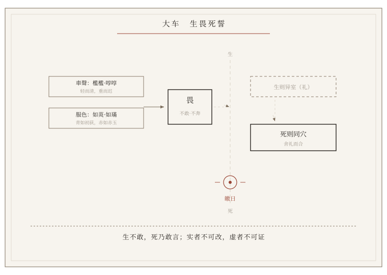

王风 · 之九 SJ073
诗三判：
《毛序》：「《大车》，刺周大夫也。礼义陵迟，男女淫奔，故陈古以刺今，大夫不能听男女之讼焉。」
毛传：「大车，大夫之车。槛槛，车行声也。毳衣，大夫之服。菼，鵻也，芦之初生者也。」二章「啍啍，重迟之貌。璊，赪也。」
郑笺：「毳衣之属，衣缋而裳绣，五色备焉。」「古者田狩而食其禽兽，故毳衣皆毛羽。菼，青色；璊，頳也。」末章「穴，圹也。榖，生也。」
朱子《诗集传》：「淫奔者相命之词也。大车，谓大夫之车。毳衣，大夫之服。」末章「言苟生则异室，而死则同穴，以自誓也。」
本库的看法：《大车》是一首「以日自誓」的诗。 全篇只两层：一层是「畏」，压在生者身上；一层是「愿」，托在死后。车与衣是畏之形，异室与同穴是愿之界，皦日是誓之证。生不得同室，故以死为期——这不是痴，是把礼之界与情之诚各归其位。
先辨四物：大车是大夫之车，不是载货之车；毳衣是毛羽之服，不是粗布；菼是芦之初生青色，不是菼蓼之草；璊是赤玉之色，不是玉名。末章「榖」是「生」，不是「穀粟」。
第一章
大车槛槛，毳衣如菼。岂不尔思？畏子不敢。
第二章
大车啍啍，毳衣如璊。岂不尔思？畏子不奔。
第三章
榖则异室，死则同穴。谓予不信，有如皦日。
读法：两章皆「车声／衣色」起，「畏」字落；三章陡然换韵，从「之谈」折入「质」——韵一变，事也变：从行路之声，落到生死之界。 韵读之转，即诗之转。
槛槛：车行声。《说文》「槛，栊也」，此借声。笺「槛槛，车行声」。啍啍，重迟之貌，车重而声缓。
毳衣：毛羽之服。天子大夫服毳冕，衣缋裳绣。所以「如菼」「如璊」，言其色。
菼：芦之初生，色青白。《尔雅》「菼，骓也」；郭注「菼，薍也，芦之初生者」。
璊：赤玉之色。《说文》「璊，玉䞓色也」；段注「䞓，赤色」。
榖：生。《尔雅·释言》「榖，生也」。与「穀」别，此处不作粟解。
穴：圹，墓穴。笺「穴，圹也」。
皦日：白日。皦，明。指日以誓，古人誓辞之常式。
名物总辨：车声、衣色皆「在外」之物——所以能畏人者，正在此外在。而「异室」「同穴」皆「在内」之事——礼所能管者生前，死则礼不能管。诗之锋芒，正在这条缝上。
大夫的车槛槛地过，毳衣青得像初生的芦。 我岂不思念你？只是畏你的法，不敢。
大夫的车啍啍地重，毳衣赤得像玉的頳色。 我岂不思念你？只是畏你，不肯奔。
活着就各居一室，死了愿同一穴。 你若不我信——天上这白日，可以为证。
一章「畏子不敢」：畏其法，故不敢奔。 二章「畏子不奔」：畏其人，故不肯奔。 三章「榖则异室，死则同穴」：生者守界，死者合愿。
三章之要，在「榖」字：不是「生不如死」，是「生有生之界」。若只读作殉情，则第三句「谓予不信」无处安放——发誓的人，还在活着。
此诗教人识「界」。人生而有事不可越：有法之界，有礼之界，有势之界。越则伤，不越则屈。诗人不教人越界，也不教人认命，只教人把不能说的话留到能说的地方说——所以托于死，托于日。
教者之要：不与少年讲「同穴」之烈，先讲「异室」之守。守得住界的人，其愿才重；守不住界的人，其愿只是欲。

图一取三物：车轮辐、箱辕衡为「车」，交领宽袖束带为「衣」，外圈内好为「璧」。 图二取一义：左为生——车声槛槛啍啍、服色如菼如璊，二威入一「畏」盒，虚线越界；右为死——异室作虚框（礼，不可居），同穴作实框（愿，可期）；皦日以赭环压界，是一誓压两界。